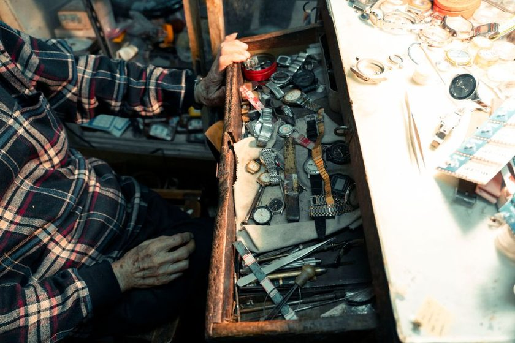

Shrinkage
Why the Drawer Hides Losses

For three years the same eleven hand tools lived in the second drawer of a steel cabinet, laid flat on a scrap of carpet so they would not rattle. Then the cabinet was sold and the eleven went onto a sheet of plywood on the wall, each one traced in white paint. Nothing else changed — same tools, same bench, same two people using them. What changed was how fast a missing tool became a known fact. In the drawer it took, on average, until somebody needed the thing. On the wall it took the length of a glance.
A drawer requires a deliberate act
A closed drawer is a sealed argument. To find out what is inside, you have to decide to find out: walk over, grip the handle, pull, and look down at an angle that is never quite right because the light is above you and your own head is in the way. Every one of those steps is a small tax, and small taxes are exactly the kind people stop paying when the shop is busy.
A wall does not ask for any of that. It is in the visual field of anyone who walks past it, whether or not they were thinking about tools at all. You do not audit a wall; the wall audits itself against you, continuously, using attention you were spending anyway. That is the whole difference in one sentence, and everything else in this piece is a consequence of it.
The consequence that matters most is timing. A gap on the wall is discovered at the moment it occurs, or within a few minutes of it. A gap in a drawer is discovered at the moment someone reaches for that specific tool, which may be tomorrow, or in March. By then the trail is cold: nobody remembers who was here, what job was running, or whether the thing went into a van, a pocket, or a bin of offcuts. The loss is the same either way. The recoverability is not.
A drawer tells you a tool is gone at the exact moment that information has stopped being useful.
Stacking is the second mechanism
Depth is the drawer's other trick. A wall is a single layer by construction — you cannot hang a second chisel behind the first one and pretend both are there. A drawer is a volume, and volumes invite stacking. Put a tray of drill bits on top of a pair of tin snips, and the snips leave the world. They are still physically present, but they have left the inventory in every sense that matters, because nobody will confirm them again until the tray comes out.
This is why drawers tend to produce a particular kind of surprise: you go looking for something you assumed was long gone and it is there, under two other things, mildly rusted. The reverse surprise happens just as often and stings more. The bottom layer of a drawer is a place where both presence and absence go unverified, which is a strange property for a storage system to have.
Sliding makes it worse. Open and close a deep drawer a few dozen times and the contents migrate. What you left at the front is now at the back, wedged under the runner. A shape you would have recognized instantly on a board has become an outline you cannot see at all — which is the argument made at greater length in The Shape That Tells on You.
The same eleven tools, measured two ways
These are the notes kept during the move, not a study. They are one bench, one pair of hands, and a small notebook. Read them as a description of what happened here rather than a general finding.
| Situation | In the drawer | On the wall |
|---|---|---|
| Tool left in a van overnight | Noticed when next needed — sometimes days later | Noticed at the end-of-day count, same evening |
| Tool borrowed by a second person | No visible trace; the drawer looks identical either way | Empty silhouette, visible from the doorway |
| Duplicate quietly accumulating | Easy — three of the same driver hid for a year | Hard; there is only one hook, so the third has nowhere to go |
| Item slid under the runner | Reads as missing until the drawer is emptied | Not a failure mode that exists |
| Deciding whether to buy a replacement | Guesswork, so replacements get bought twice | Answered by looking at the board |
The honest case for drawers
None of the above makes drawers wrong. They solve real problems that a wall handles badly, and pretending otherwise leads to a shop full of dusty edges and a floor covered in dropped fasteners.
- Dust and air. Anything hung on an open wall collects whatever the room produces. Fine dust settles on oiled steel and holds moisture against it. A closed drawer is a modest but genuine shelter.
- Sharp edges at body height. A row of exposed blades at shoulder level in a narrow room is a hazard you will eventually meet with your forearm. Six square metres does not leave much room to walk around a mistake.
- Small consumables. Screws, washers, sanding discs, spare blades. These have no silhouette worth tracing and no meaningful individual identity. Hanging them would be theatre.
- Sets that only work together. A boxed set of taps is one object, not fourteen. Splitting it across a wall creates fourteen chances to lose one.
- Light and glare. Some benches face a window, and a wall of bright steel in direct sun is genuinely unpleasant to work beside.
The split this bench settled on
After a year of moving things back and forth, the rule that stuck is embarrassingly simple: anything with a distinct silhouette goes on the wall; anything that lives in a box stays in a drawer, with a written count on the lid.
Silhouette is the test because silhouette is what makes absence legible. A pair of pliers, a coping saw, a block plane, a set of long-nose grips — each of these has a shape you can trace once and then recognize forever, at any distance, from any angle. A handful of M6 bolts does not. Trying to force bolts onto a board produces a wall that is busy and uninformative, which is worse than a drawer because it looks organized while telling you nothing.
The written count on the lid is the part people skip, and it is the part that does the work. A masking-tape label reading 28 discs — checked 14 Feb converts an opaque box into something you can verify in two seconds without emptying it. The count does not need to be exact for small consumables; it needs to be recent enough that a large drop is obvious. When the number on the lid and the number in the box diverge badly, you have learned something. When they match, you have spent two seconds. Both outcomes are fine.
Three further conventions came out of the same year. One drawer, one category — mixing categories is how the bottom layer forms. Nothing stacks more than two deep; if it needs a third layer, it needs a second drawer or fewer items. And every drawer gets opened during the evening pass whether or not anyone touched it that day, which is the small discipline described in The End-of-Day Count Habit.
What the drawer is actually good at
Worth stating plainly, because the framing so far has been unkind. A drawer is excellent at protecting things and terrible at reporting on them. A wall is excellent at reporting and offers no protection at all. Neither is a storage system on its own; together they are one, provided you are deliberate about which job you are asking each to do.
The failure mode in most small shops is not choosing drawers. It is choosing drawers by default — putting a tool away in whichever opening is nearest, and then wondering months later why the inventory feels like a rumour. Position should be a decision made once, on purpose, and then left alone. After that the shop mostly runs itself, and the evening pass takes under two minutes instead of turning into an archaeological dig.
A note on scope
This is one small workshop's arrangement, written down so it can be argued with. Different trades, insurance requirements, shared premises, and shops with real theft exposure all have constraints this bench does not face. Treat any of it as a starting point to test against your own room, not as a recommendation about how anyone else should store their tools.
Read also
- Painted Outlines Versus Labels — why a traced shape reads faster than a printed word.
- Six Square Metres and a Count — the room this journal is written in, and how it got arranged.
- What a Missing Outline Actually Costs — the quiet expense of finding out late.